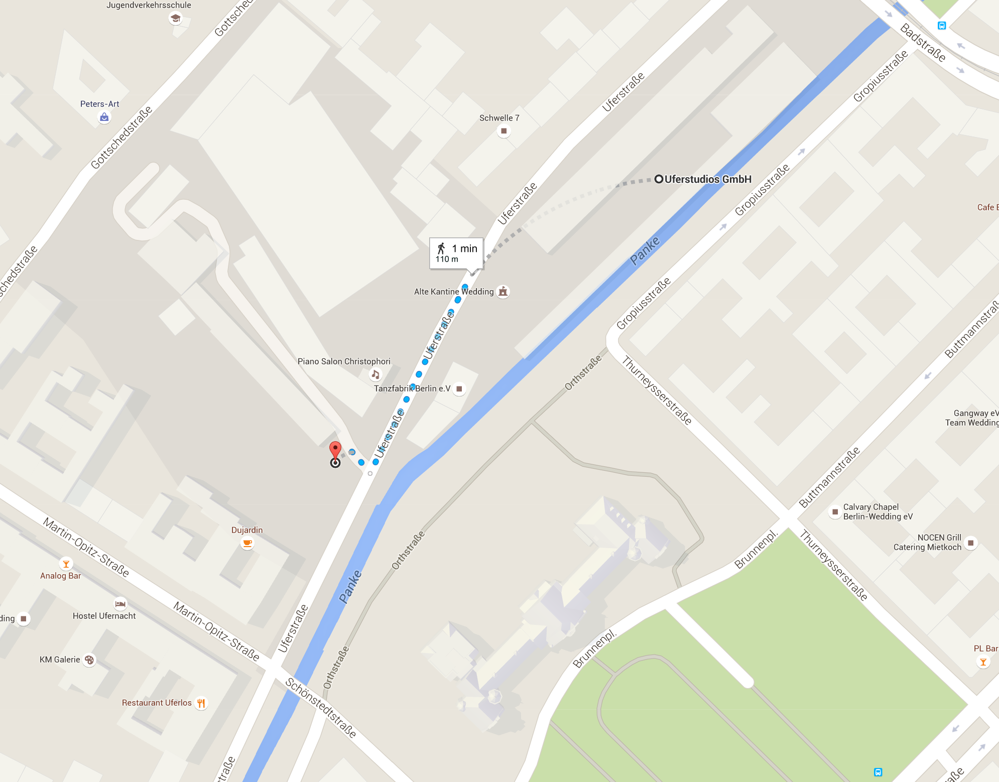
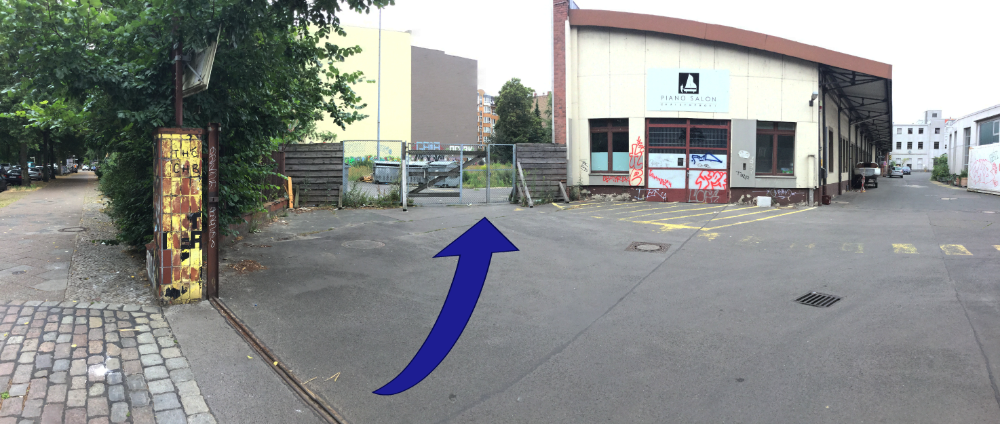

JACQUERIES


Once you've found the area
Hit "Done" in the bottom right corner, to head back into the app
Press the "Begin AR" button
Point your device at the graffitied wall indicated in the top right hand corner of your device
You have reached the end of page. Click for return to top of page